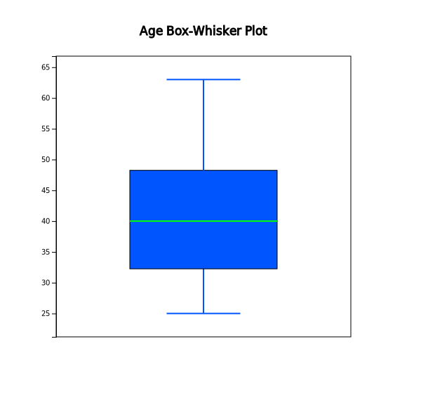

In a gymnastics competition, four judges scored 3, 4, 6, and 7 points for a player A and 2, 4, 6,
and 8 points for a player B. Both players have the same mean of 5, but it is easy to see that
the player B has a large deviation in the scores compared to the player A. Degree of data dispersion
is calculated using a numerical value to compare two sets of data and it is called a measure of dispersion.
The most commonly used measure of dispersion is a variance (or standard deviation) and other measures
include a mean absolute deviation, a range, and an inter-quartile range.
A variance is an average of all squared distances from each data to the mean. Therefore, if data are
spread widely around their mean, the variance will be large, and if data are concentrated around
the mean, the variance will be small. A population variance is denoted as \(\sigma^2\), and a
sample variance is denoted as \(s^2\). Formulas to calculate the population variance and the sample
variance are slightly different as follows.
$$
\begin{align}
&\text{Population variance} &\quad \sigma^{2} ~&=~ { {1 \over N} {\sum _{i=1} ^{N} (x_{i} - \mu )^{2}} } ~~~~ (N:~number~ of~ population~ data) \\
&\text{Sample variance} &\quad s^{2} ~&=~ { { 1 \over {n-1} }{\sum _{i=1} ^{n} (x_{i} - {\overline x } ) ^{2}} } ~~~~ (n:~ number~ of~ sample~ data)
\end{align}
$$
There are important reasons for using \(n-1\) instead of \(n\) when calculating the sample variance
which will be discussed in Chapter 6. Meaning of the population variance, which is an average of all
squared distances from each data to the population mean, is illustrated in <Figure 4.3.6>.
In this Figure, dot mark represents each data value. \(\sigma^2\) = 2.5 is calculated as the sum of
squared distances (10) divided by the number of data, \(n\) = 4 in this example.
<Figure 4.3.6> Calculation of a population variance
A standard deviation is defined as the square root of the variance. A population standard deviation
is denoted as \(\sigma\), and a sample standard deviation is denoted as \(\s\). The variance is not
easy to interpret, because it is an average of the squared distances. However, since the standard
deviation is the square root of the variance, it is interpreted as an average distance from each
data value to the mean.
$$
\begin{align}
\sigma &=~ \sqrt {\sigma^2} \\
s &=~ \sqrt {s^2}
\end{align}
$$
Variance and Standard Deviation
Variance is an average of all squared distances from each data to the mean. A population
variance is denoted as \(\sigma^2\), and a sample variance is denoted as \(s^2\).
Standard deviation is defined as the square root of the variance. A population
standard deviation is denoted as \(\sigma\), and a sample standard deviation is denoted as \(s\).
Example 4.3.5(Quiz scores)
In Example 4.3.1, the mean of the following sample data was calculated as 6.
5, 6, 3, 7, 9, 4 and 8
Calculate a sample variance and a sample standard deviation of this data.
These values coincide with the output of 『eStat』 in <Figure 4.3.3> and the output of 『eStatU』 in <Figure 4.3.4>.
When there are more than two quantitative variables, if units of data measurement are different from each other, comparing their standard deviations is meaningless. In this case, a coefficient of variation which is a division of the standard deviation by the mean, is used to compare several variables. The coefficient of variation is usually calculated as a percent value of the standard deviation to its mean.
$$
\begin{align}
&\text{Population coefficient of variation} &C = \frac{\sigma}{\mu} \times 100 \quad \text{(unit %)} \\
&\text{Sample coefficient of variation} &c = \frac {s} {\overline {x}} \times 100 \quad \text {(unit %)}
\end{align}
$$
Coefficient of Variation
Coefficient of variation is a division of the standard deviation by the mean and it
is used to compare several variables. The coefficient of variation is usually calculated
as a percent value of the standard deviation to its mean.
Example 4.3.6(Sales data)
In a company, the average weekly sales was 1.36 billion dollar and its standard deviation was 0.28 billion dollar. If the same data were made in monthly sales, the average was 5.44 billion dollar and its standard deviation was 0.5 billion dollar. Calculate a coefficient of variation for each case and compare.
Answer
The coefficient of variation in weekly sales is as follows.
Therefore, we can see that the variation in monthly sales is smaller than the variation in weekly sales.
A range is the difference between the maximum and the minimum value of data. The range is easy to calculate, but it is not a good measure of dispersion if there are extreme points.
$$
\text{Range = Maximum - Minimum}
$$
A \(p\)-percentile implies roughly the percent data when data are arranged in ascending order from small to large.
$$
p\text{-percentile} = p\%~ \text{of observations} \le \text{to this value and} ~(100-p)\% ~\ge~ \text{this value.}
$$
Note that, if data size is small, a single observation may fall into several percentiles according to this definition.
An inter-quartile range is a measure to complement the disadvantage of the range. The 25 percentile of the data is called the 1st quartile (Q1), the 50 percentile is called the 2nd quartile (Q2) or median, and the 75 percentile is called the 3rd quartile (Q3). The inter-quartile range (IQR) is the range between the 3rd quartile and the 1st quartile.
$$
\text{Inter-quartile range (IQR) = Q3 - Q1 }
$$
One simple way to calculate Q1 and Q3 is that, after we arrange the data in ascending order, we divide the data into two pieces which have equal number of data. In case of odd number of data, we include the median to each piece of data. Q1 is the median of the 1st piece of data and Q3 is the median of the 2nd piece of data.
Range, percentile, Quartile and Inter-quartile Range
Range is the difference between the maximum and the minimum value of data.
\(p\)-percentile is that there are p% of data less than or equal to (\(\le\)) this value and (100-p)% of data located above or equal to (\(\ge\)) this value. The 25 percentile of the data is called the 1st quartile (Q1), the 50 percentile is called the 2nd quartile (Q2) or median, and the 75 percentile is called the 3rd quartile (Q3).
Inter-quartile range (IQR) is the range between the 3rd quartile and the 1st quartile.
Example 4.3.7
If you have data 5, 3, 7, 9, find a range and an inter-quartile range.
Answer
The maximum of the data is 9 and the minimum is 3, therefore range is as follows.
\( \qquad \small
\text{Range} ~=~ 9 – 3 ~=~ 6.
\)
In order to find the quartiles of the data, first arrange the data in ascending order as follows.
3, 5, 7, 9
The median of these numbers is the average of \( ({4 \over 2})^\text{th} \) and \( ({4 \over 2 + 1})^\text{th} \) data.
In order to calculate quartiles, since the number of data is even, we divide data into two pieces as follows:
3, 5
7, 9
The first quartile Q1 is the median of {3, 5} which is Q1 = 4. The third quartile Q3 is the median of {7. 9} which is Q3 = 8. So, the inter-quartile range IQR is as follows.
Example 4.3.8
Using the data of Example 4.3.1 which are as follows, calculate a range and an inter-quartile range and compare it with the output of 『eStat』.
5, 6, 3, 7, 9, 4 and 8
Answer
The maximum of the data is 9 and the minimum is 3. Therefore, the range is as follows.
\( \qquad \small
\text{Range} ~=~ 9 – 3 ~=~ 6.
\)
In order to find quartiles of data, first arrange the data in ascending order as follows.
3, 4, 5, 6, 7, 8, 9
The median of the data is the data value of \( ({{7+1} \over 2})^\text{th} ~=~4^\text{th} \) which is 6.
In order to calculate the quartiles, since the number of data is odd, divide the data into two pieces as follows. Note that the median is included in both pieces of data.
3, 4, 5, 6
6, 7, 8, 9
The first quartile Q1 is the median of {3, 4, 5, 6} which is Q1 = 4.5. The third quartile Q3 is the median of [6, 7. 8, 9] which is Q3 = 7.5.
So, the inter-quartile range IQR is as follows.
These values of Q1, Q3 and IQR coincide with the output of 『eStat』 in <Figure 4.3.3> and the output of 『eStatU』 in <Figure 4.3.4>.
A box plot is a graph to show the minimum, the 1st quartile, the median, the 3rd quartile, and the maximum of the data simultaneously that has been used recently.
The box plot first marks the 1st quartile (Q1) and the 3rd quartile (Q3) at a horizontal line and connects with a square box. Then displays the median (Q2) at the location proportional to Q1 and Q3 in the box and connects the box with the minimum and the maximum.
Also, draw a vertical line at (minimum - 1.5 IQR) and at (maximum + 1.5 IQR) as in <Figure 4.3.3>. Using the box plot, you can check a symmetry of data, a central location of data (median), and a degree of dispersion (IQR).
Data which are less than the line (minimum - 1.5 IQR) or greater than (maximum + 1.5 IQR) are considered as extremes (marked * in <Figure 4.3.7>).
Some statistical packages display the left line which is to check an extreme point as Max(minimum, Q1 - 1.5 IQR) and the right line as Min( maximum, Q3 + 1.5 IQR).
<Figure 4.3.7> box plot
Box Plot
Box plot is a graph to show minimmum, Q1, median, Q3, maximum of data simultaneously that has recently begun to be widely used.
Example 4.3.9
Using the following data, draw a dot plot and a box plot using 『eStatU』.
5, 6, 3, 7, 9, 4, 15
Answer
Using the menu ‘Dot Graph – Box Plot – Descriptive Statistics’ in 『eStatU』 , if you enter the data and click the [Execute] button, the dot plot and the box plot appear as in <Figure 4.3.8>.
<Figure 4.3.8> Dot graph and box plot of the data
Example 4.3.10(Ages of teachers by gender)
In a middle school, ages of all teachers with their gender were surveyed and the data can be found at the following location of 『eStat』.
1) Draw a box plot of the age using 『eStat』 and examine a median, a range, a quartile and an inter-quartile range.
2) Draw a box plot of the age by gender using 『eStat』 and compare medians, ranges, quartiles and IQRs by gender.
Answer
1) After loading the data to 『eStat』 , enter the value labels of ‘Gender’ as ‘Male’ for 1
and ‘Female’ for 2 using [EditVar] button. Click on the box plot icon and then 'Age' variable,
then the horizontal box plot is appeared as in <Figure 4.3.9>. If you select ‘Vertical’
from the options below the graph, the vertical box plot shown as in <Figure 4.3.10> is appeared.
Based on this box plot, we can see that the upper half of data is more scattered than the lower half
of data which implies there are more aged teachers.
<Figure 4.3.9> Horizontal box plot of age variable

<Figure 4.3.10> Vertical box plot of age variable
If you click button of [Descriptive Statistics] in the options, the basic statistics of the age is displayed as shown in <Figure 4.3.11>.
<Figure 4.3.11> Descriptive statistics of age variable
2) If you click on 'Gender' after 'Age' variable, the horizontal box plot by gender appears as shown in <Figure 4.3.12>. If you select ‘Vertical’ from the options below the graph, the vertical box plot by gender appears as shown in <Figure 4.3.13>. You can observe that dispersion of female teachers' ages is greater than that of male teachers’.
<Figure 4.3.12> Horizontal box plot of age by gender
<Figure 4.3.13> Vertical box plot of age by gender
If you click the button of [Basic Statistics] in the options, the basic statistics of the age by gender is displayed in the Log Area as in <Figure 4.3.14>.
<Figure 4.3.14> Descriptive statistics of age by gender
Practice 4.3.2(Effect of Vitamin C on Tooth Growth in Guinea Pigs)
The effect of Vitamin C on tooth growth in Guinea Pigs was examined. The response is the length of odontoblasts (cells responsible for tooth growth) in 60 guinea pigs. Each animal received one of three dose levels of vitamin C (0.5, 1, and 2 mg/day) by one of two delivery methods, orange juice or ascorbic acid (a form of vitamin C and coded as VC). Data can be found at the following location of 『eStat』.
[Ex] ⇨ eBook ⇨ PR040302_Rdatasets_ToothGrowth.csv
Data format:
V1
length
numeric
Tooth length
V2
supp
factor
Supplement type (VC or OJ).
V3
dose
numeric
Dose in milligrams/day
1) Draw a box plot of the length using 『eStat』 and find the median, the range, the quartiles and the IQR. Analyze the graph and the basic statistics.
2) Draw a box plot of the length by the supplement using 『eStat』 and find the median, the range, the quartiles and the IQR by the supplement. Analyze the graphs and the basic statistics.
3) Draw a box plot of the length by the dose using 『eStat』 and find the median, the range, the quartiles and the IQR by the doset. Analyze the graphs and the basic statistics.
Multiple Choice Exercise
*** Choose one answer and click [Submit] button
4.9 Which of the following statistical analysis is wrong if the 1st quartile is 68.25 and the 2nd quartile is 79.06 and the 3rd quartile is 90.75?
4.10 What is a convenient measure to compare the dispersion of data which has different units?